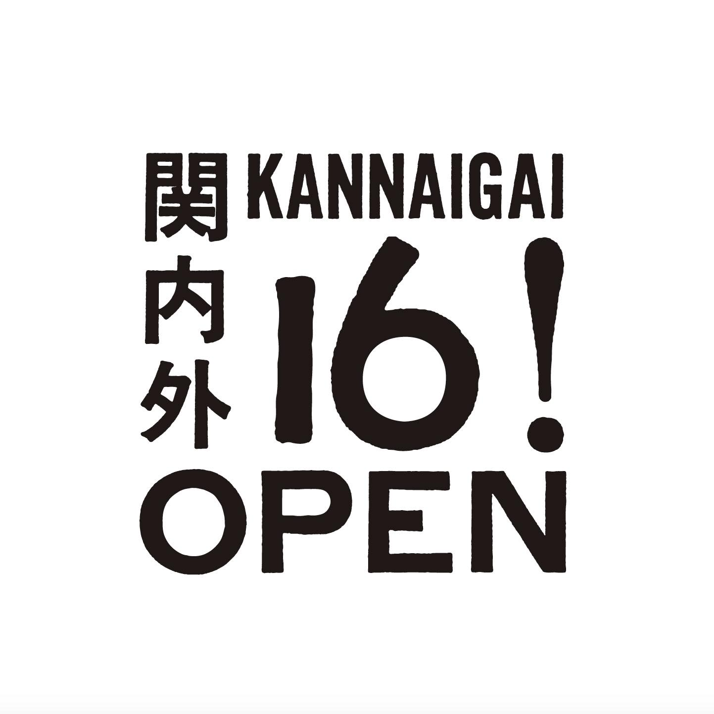
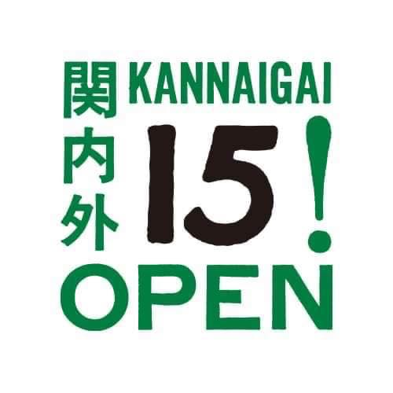
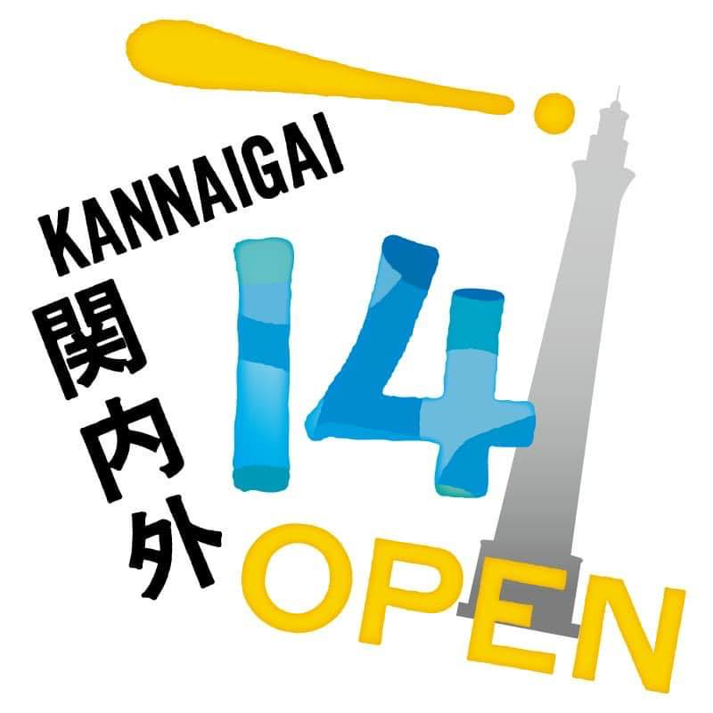
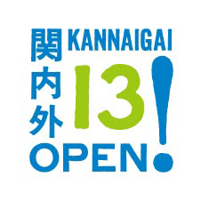
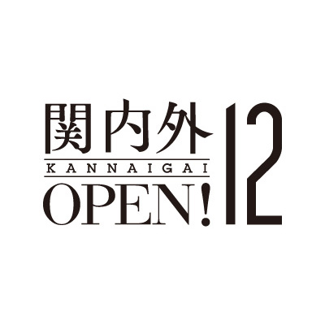

関内外OPEN!17
イベント概要
まちにクリエイターがいると、なにが生まれるのか。
関内外OPEN!は、横浜・関内周辺を拠点とするクリエイターたちによる、年に一度の創造的かつ実験的なイベントです。
17年目の今年は、活動の舞台を関内から横浜全域へと広げ、発見・共創・交流・発酵の4つの実験的プロジェクトを実施。
2026年2月に、それぞれの現場で再発見した"横浜の多面的な魅力"を、展示とトークセッションを通して紹介します。
開催情報
- 日時
- 2026年2月23日(月)13:00〜17:00
- 場所
- 象の鼻テラス
※詳細は近日公開予定
クレジット
主催：関内外OPEN!17事務局（関内外クリエイターズ／アーツコミッション・ヨコハマ（公益財団法人横浜市芸術文化振興財団））
共催：横浜市 にぎわいスポーツ文化局
協力：象の鼻テラス
令和7年度 文化庁 文化芸術創造拠点形成事業
アーカイブ
- 関内外OPEN!16 2024年11月3日 
- 関内外OPEN!15 2023年10月14日〜15日 
- 関内外OPEN!14 2022年10月1日〜2日 
- 関内外OPEN!13 2021年11月3日〜7日 
- 関内外OPEN!12 2020年11月3日 
- 関内外OPEN!11 2019年11月2日〜3日
- 関内外OPEN!10 2018年11月3日〜4日
- 関内外OPEN!9 2017年11月3日〜4日
- 関内外OPEN!8 2016年11月5日〜6日
- 関内外OPEN!7 2015年11月7日〜8日
- 関内外OPEN!6 2014年10月17日〜19日
- 関内外OPEN!5 2013年11月1日〜2日
- 関内外OPEN!4 2012年10月26日〜28日
- 関内外OPEN!3 2011年11月1日〜2日
- 関内外OPEN!2 2010年9月11日〜12日
- 関内外OPEN! 2009年9月4日〜6日